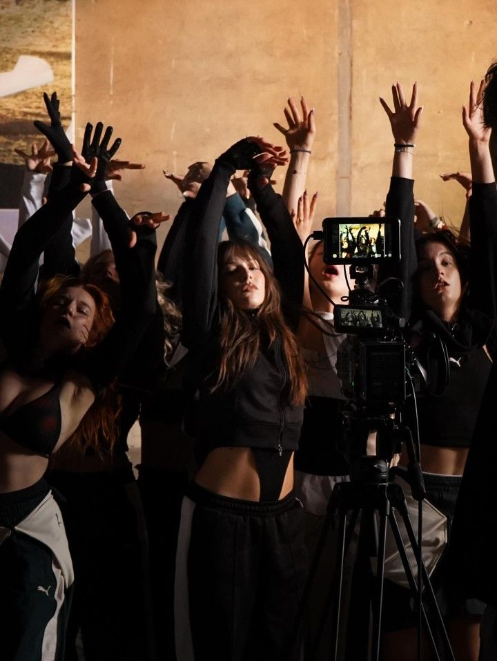
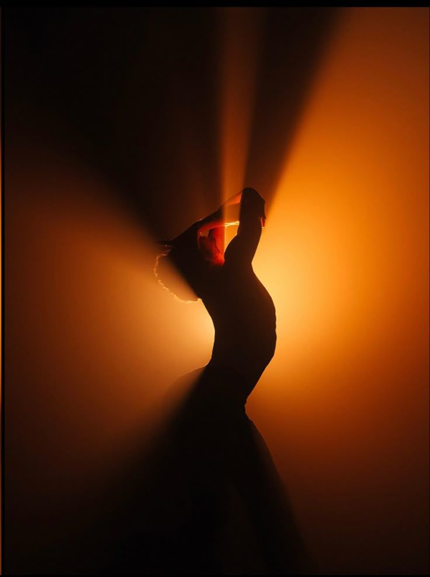
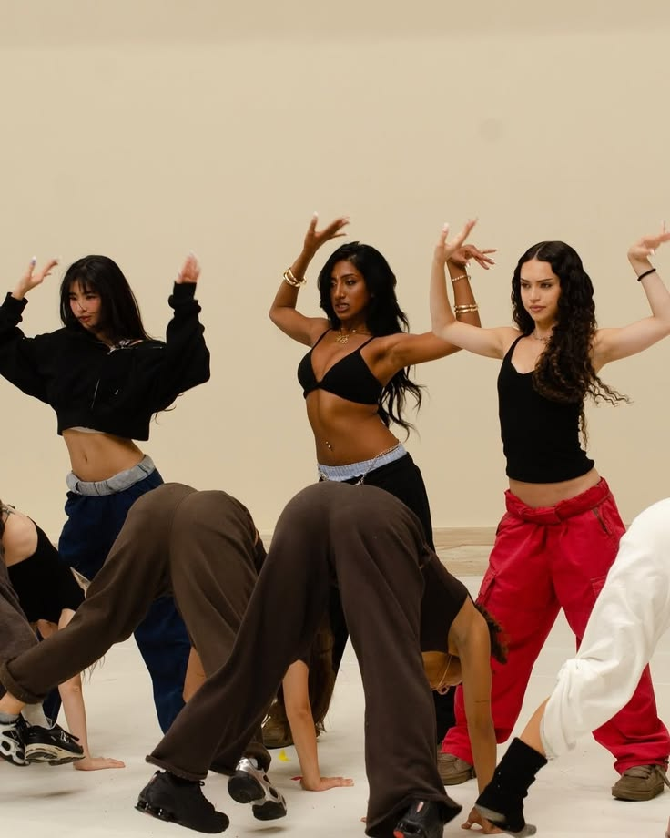
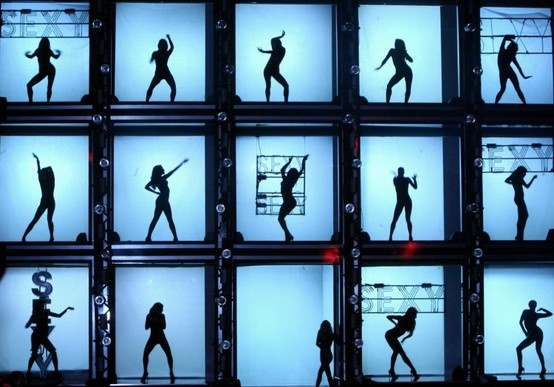

Bouwstenen van Dans & Film
Vier lagen die samen bepalen hoe dans op film overkomt: belichting, camerawerk, choreografie en montage.
Tamar's digital garden
Wat gebeurt er wanneer dans het podium verlaat en door de camera wordt vastgelegd? Ik onderzoek hoe beweging verandert door belichting, camerawerk, choreografie en montage. Ik ontdek hoe deze verschillende elementen samen een nieuwe manier kunnen creëren om dans te ervaren.
Vier lagen die samen bepalen hoe dans op film overkomt: belichting, camerawerk, choreografie en montage.



